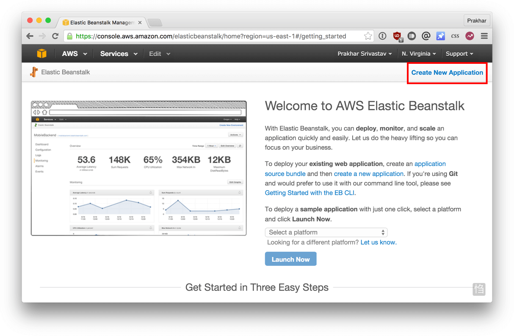
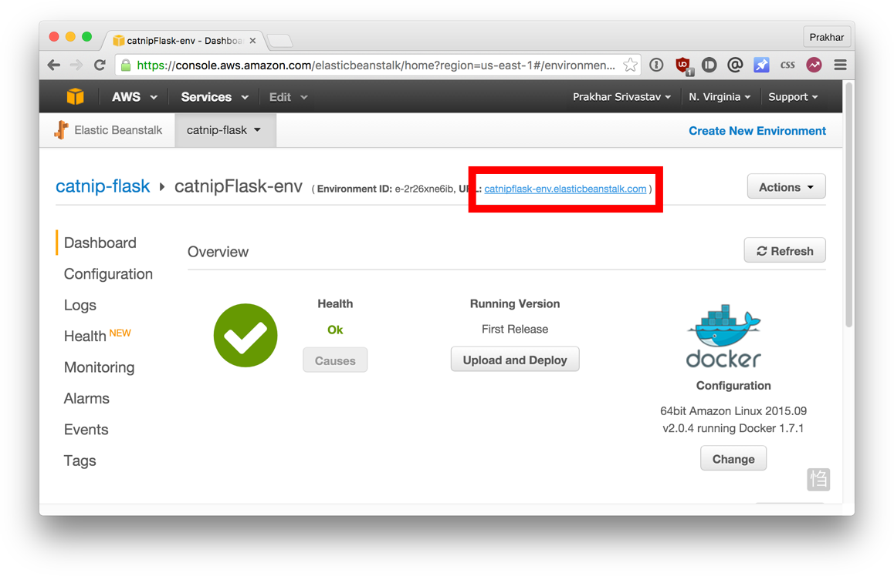
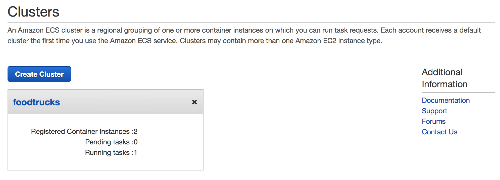

Learn to build and deploy your distributed applications easily to the cloud with Docker
Written and developed by Prakhar Srivastav.
Wikipedia defines Docker as
an open-source project that automates the deployment of software applications inside containers by providing an additional layer of abstraction and automation of OS-level virtualization on Linux.
Wow! That's a mouthful. In simpler words, Docker is a tool that allows developers, sys-admins etc. to easily deploy their applications in a sandbox (called containers) to run on the host operating system i.e. Linux. The key benefit of Docker is that it allows users to package an application with all of its dependencies into a standardized unit for software development. Unlike virtual machines, containers do not have the high overhead and hence enable more efficient usage of the underlying system and resources.
The industry standard today is to use Virtual Machines (VMs) to run software applications. VMs run applications inside a guest Operating System, which runs on virtual hardware powered by the server’s host OS.
VMs are great at providing full process isolation for applications: there are very few ways a problem in the host operating system can affect the software running in the guest operating system, and vice-versa. But this isolation comes at great cost — the computational overhead spent virtualizing hardware for a guest OS to use is substantial.
Containers take a different approach: by leveraging the low-level mechanics of the host operating system, containers provide most of the isolation of virtual machines at a fraction of the computing power.
Docker's rise has been nothing short of meteoric. Although containers by themselves are not a new technology, it was not until Docker arrived that they started to get mainstream attention. By providing standard APIs that made containers easy to use and creating a way for the community to collaborate around libraries of containers, Docker has radically changed the face of the technology landscape. In an article published by The Register in mid-2014, it was claimed that Google runs over two billion containers per week.
Google Trends for 'Docker'

In addition to Docker's continual growth, Docker, Inc., the developer behind Docker has been valued at over a billion dollars! Due to its benefits of efficiency and portability, Docker has been gaining mind share rapidly, and is now leading the Containerization movement. As developers going out into the world, it is important that we understand this trend and see how we can benefit from it.
This tutorial aims to be the one-stop shop for getting your hands dirty with Docker. Apart from demystifying the Docker landscape, it'll give you hands-on experience with building and deploying your own webapps on the Cloud. We'll be using Amazon Web Services to deploy a static website, and two dynamic webapps on EC2 using Elastic Beanstalk and Elastic Container Service. Even if you have no prior experience with deployments, this tutorial should be all you need to get started.
This document contains a series of several sections, each of which explains a particular aspect of Docker. In each section, we will be typing commands (or writing code). All the code used in the tutorial is available in the Github repo.
Note: This tutorial uses version 1.12.0-rc2 of Docker. If you find any part of the tutorial incompatible with a future version, please raise an issue. Thanks!
There are no specific skills needed for this tutorial beyond a basic comfort with the command line and using a text editor. Prior experience in developing web applications will be helpful but is not required. As we proceed further along the tutorial, we'll make use of a few cloud services. If you're interested in following along, please create an account on each of these websites:
Getting all the tooling setup on your computer can be a daunting task, but thankfully as Docker has become stable, getting Docker up and running on your favorite OS has become very easy.
Until a few releases ago, running Docker on OSX and Windows was quite a hassle. Lately however, Docker has invested significantly into improving the on-boarding experience for its users on these OSes, thus running Docker now is a cakewalk. The getting started guide on Docker has detailed instructions for setting up Docker on Mac, Linux and Windows.
Once you are done installing Docker, test your Docker installation by running the following:
$ docker run hello-world
Hello from Docker.
This message shows that your installation appears to be working correctly.
...
Now that we have everything setup, it's time to get our hands dirty. In this section, we are going to run a Busybox container on our system and get a taste of the docker run command.
To get started, let's run the following in our terminal:
$ docker pull busybox
Note: Depending on how you've installed docker on your system, you might see a
permission deniederror after running the above command. If you're on a Mac, make sure the Docker engine is running. If you're on Linux, then prefix yourdockercommands withsudo. Alternatively you can create a docker group to get rid of this issue.
The pull command fetches the busybox image from the Docker registry and saves it to our system. You can use the docker images command to see a list of all images on your system.
$ docker images
REPOSITORY TAG IMAGE ID CREATED VIRTUAL SIZE
busybox latest c51f86c28340 4 weeks ago 1.109 MB
Great! Let's now run a Docker container based on this image. To do that we are going to use the almighty docker run command.
$ docker run busybox
$
Wait, nothing happened! Is that a bug? Well, no. Behind the scenes, a lot of stuff happened. When you call run, the Docker client finds the image (busybox in this case), loads up the container and then runs a command in that container. When we run docker run busybox, we didn't provide a command, so the container booted up, ran an empty command and then exited. Well, yeah - kind of a bummer. Let's try something more exciting.
$ docker run busybox echo "hello from busybox"
hello from busybox
Nice - finally we see some output. In this case, the Docker client dutifully ran the echo command in our busybox container and then exited it. If you've noticed, all of that happened pretty quickly. Imagine booting up a virtual machine, running a command and then killing it. Now you know why they say containers are fast! Ok, now it's time to see the docker ps command. The docker ps command shows you all containers that are currently running.
$ docker ps
CONTAINER ID IMAGE COMMAND CREATED STATUS PORTS NAMES
Since no containers are running, we see a blank line. Let's try a more useful variant: docker ps -a
$ docker ps -a
CONTAINER ID IMAGE COMMAND CREATED STATUS PORTS NAMES
305297d7a235 busybox "uptime" 11 minutes ago Exited (0) 11 minutes ago distracted_goldstine
ff0a5c3750b9 busybox "sh" 12 minutes ago Exited (0) 12 minutes ago elated_ramanujan
So what we see above is a list of all containers that we ran. Do notice that the STATUS column shows that these containers exited a few minutes ago.
You're probably wondering if there is a way to run more than just one command in a container. Let's try that now:
$ docker run -it busybox sh
/ # ls
bin dev etc home proc root sys tmp usr var
/ # uptime
05:45:21 up 5:58, 0 users, load average: 0.00, 0.01, 0.04
Running the run command with the -it flags attaches us to an interactive tty in the container. Now we can run as many commands in the container as we want. Take some time to run your favorite commands.
Danger Zone: If you're feeling particularly adventurous you can try
rm -rf binin the container. Make sure you run this command in the container and not in your laptop. Doing this will not make any other commands likels,echowork. Once everything stops working, you can exit the container (typeexitand press Enter) and then start it up again with thedocker run -it busybox shcommand. Since Docker creates a new container every time, everything should start working again.
That concludes a whirlwind tour of the mighty docker run command, which would most likely be the command you'll use most often. It makes sense to spend some time getting comfortable with it. To find out more about run, use docker run --help to see a list of all flags it supports. As we proceed further, we'll see a few more variants of docker run.
Before we move ahead though, let's quickly talk about deleting containers. We saw above that we can still see remnants of the container even after we've exited by running docker ps -a. Throughout this tutorial, you'll run docker run multiple times and leaving stray containers will eat up disk space. Hence, as a rule of thumb, I clean up containers once I'm done with them. To do that, you can run the docker rm command. Just copy the container IDs from above and paste them alongside the command.
$ docker rm 305297d7a235 ff0a5c3750b9
305297d7a235
ff0a5c3750b9
On deletion, you should see the IDs echoed back to you. If you have a bunch of containers to delete in one go, copy-pasting IDs can be tedious. In that case, you can simply run -
$ docker rm $(docker ps -a -q -f status=exited)
This command deletes all containers that have a status of exited. In case you're wondering, the -q flag, only returns the numeric IDs and -f filters output based on conditions provided. One last thing that'll be useful is the --rm flag that can be passed to docker run which automatically deletes the container once it's exited from. For one off docker runs, --rm flag is very useful.
Lastly, you can also delete images that you no longer need by running docker rmi.
In the last section, we used a lot of Docker-specific jargon which might be confusing to some. So before we go further, let me clarify some terminology that is used frequently in the Docker ecosystem.
docker pull command to download the busybox image.docker run which we did using the busybox image that we downloaded. A list of running containers can be seen using the docker ps command.Great! So we have now looked at docker run, played with a Docker container and also got a hang of some terminology. Armed with all this knowledge, we are now ready to get to the real-stuff, i.e. deploying web applications with Docker!
Let's start by taking baby-steps. The first thing we're going to look at is how we can run a dead-simple static website. We're going to pull a Docker image from Docker Hub, run the container and see how easy it is to run a webserver.
Let's begin. The image that we are going to use is a single-page website that I've already created for the purpose of this demo and hosted on the registry - prakhar1989/static-site. We can download and run the image directly in one go using docker run.
$ docker run prakhar1989/static-site
Since the image doesn't exist locally, the client will first fetch the image from the registry and then run the image. If all goes well, you should see a Nginx is running... message in your terminal. Okay now that the server is running, how do see the website? What port is it running on? And more importantly, how do we access the container directly from our host machine?
Well in this case, the client is not exposing any ports so we need to re-run the docker run command to publish ports. While we're at it, we should also find a way so that our terminal is not attached to the running container. This way, you can happily close your terminal and keep the container running. This is called detached mode.
$ docker run -d -P --name static-site prakhar1989/static-site
e61d12292d69556eabe2a44c16cbd54486b2527e2ce4f95438e504afb7b02810
In the above command, -d will detach our terminal, -P will publish all exposed ports to random ports and finally --name corresponds to a name we want to give. Now we can see the ports by running the docker port [CONTAINER] command
$ docker port static-site
80/tcp -> 0.0.0.0:32769
443/tcp -> 0.0.0.0:32768
You can open http://localhost:32769 in your browser.
Note: If you're using docker-toolbox, then you might need to use
docker-machine ip defaultto get the IP.
You can also specify a custom port to which the client will forward connections to the container.
$ docker run -p 8888:80 prakhar1989/static-site
Nginx is running...

To stop a detached container, run docker stop by giving the container ID.
I'm sure you agree that was super simple. To deploy this on a real server you would just need to install Docker, and run the above Docker command. Now that you've seen how to run a webserver inside a Docker image, you must be wondering - how do I create my own Docker image? This is the question we'll be exploring in the next section.
We've looked at images before, but in this section we'll dive deeper into what Docker images are and build our own image! Lastly, we'll also use that image to run our application locally and finally deploy on AWS to share it with our friends! Excited? Great! Let's get started.
Docker images are the basis of containers. In the previous example, we pulled the Busybox image from the registry and asked the Docker client to run a container based on that image. To see the list of images that are available locally, use the docker images command.
$ docker images
REPOSITORY TAG IMAGE ID CREATED VIRTUAL SIZE
prakhar1989/catnip latest c7ffb5626a50 2 hours ago 697.9 MB
prakhar1989/static-site latest b270625a1631 21 hours ago 133.9 MB
python 3-onbuild cf4002b2c383 5 days ago 688.8 MB
martin/docker-cleanup-volumes latest b42990daaca2 7 weeks ago 22.14 MB
ubuntu latest e9ae3c220b23 7 weeks ago 187.9 MB
busybox latest c51f86c28340 9 weeks ago 1.109 MB
hello-world latest 0a6ba66e537a 11 weeks ago 960 B
The above gives a list of images that I've pulled from the registry, along with ones that I've created myself (we'll shortly see how). The TAG refers to a particular snapshot of the image and the IMAGE ID is the corresponding unique identifier for that image.
For simplicity, you can think of an image akin to a git repository - images can be committed with changes and have multiple versions. If you don't provide a specific version number, the client defaults to latest. For example, you can pull a specific version of ubuntu image
$ docker pull ubuntu:12.04
To get a new Docker image you can either get it from a registry (such as the Docker Hub) or create your own. There are tens of thousands of images available on Docker Hub. You can also search for images directly from the command line using docker search.
An important distinction to be aware of when it comes to images is the difference between base and child images.
Base images are images that have no parent image, usually images with an OS like ubuntu, busybox or debian.
Child images are images that build on base images and add additional functionality.
Then there are official and user images, which can be both base and child images.
Official images are images that are officially maintained and supported by the folks at Docker. These are typically one word long. In the list of images above, the python, ubuntu, busybox and hello-world images are base images.
User images are images created and shared by users like you and me. They build on base images and add additional functionality. Typically, these are formatted as user/image-name.
Now that we have a better understanding of images, it's time to create our own. Our goal in this section will be to create an image that sandboxes a simple Flask application. For the purposes of this workshop, I've already created a fun little Flask app that displays a random cat .gif every time it is loaded - because you know, who doesn't like cats? If you haven't already, please go ahead and clone the repository locally like so -
$ git clone https://github.com/prakhar1989/docker-curriculum
$ cd docker-curriculum/flask-app
This should be cloned on the machine where you are running the docker commands and not inside a docker container.
The next step now is to create an image with this web app. As mentioned above, all user images are based off of a base image. Since our application is written in Python, the base image we're going to use will be Python 3. More specifically, we are going to use the python:3-onbuild version of the python image.
What's the onbuild version you might ask?
These images include multiple ONBUILD triggers, which should be all you need to bootstrap most applications. The build will COPY a
requirements.txtfile, RUNpip installon said file, and then copy the current directory into/usr/src/app.
In other words, the onbuild version of the image includes helpers that automate the boring parts of getting an app running. Rather than doing these tasks manually (or scripting these tasks), these images do that work for you. We now have all the ingredients to create our own image - a functioning web app and a base image. How are we going to do that? The answer is - using a Dockerfile.
A Dockerfile is a simple text-file that contains a list of commands that the Docker client calls while creating an image. It's a simple way to automate the image creation process. The best part is that the commands you write in a Dockerfile are almost identical to their equivalent Linux commands. This means you don't really have to learn new syntax to create your own dockerfiles.
The application directory does contain a Dockerfile but since we're doing this for the first time, we'll create one from scratch. To start, create a new blank file in our favorite text-editor and save it in the same folder as the flask app by the name of Dockerfile.
We start with specifying our base image. Use the FROM keyword to do that -
FROM python:3-onbuild
The next step usually is to write the commands of copying the files and installing the dependencies. Luckily for us, the onbuild version of the image takes care of that. The next thing we need to the specify is the port number that needs to be exposed. Since our flask app is running on port 5000, that's what we'll indicate.
EXPOSE 5000
The last step is to write the command for running the application, which is simply - python ./app.py. We use the CMD command to do that -
CMD ["python", "./app.py"]
The primary purpose of CMD is to tell the container which command it should run when it is started. With that, our Dockerfile is now ready. This is how it looks like -
# our base image
FROM python:3-onbuild
# specify the port number the container should expose
EXPOSE 5000
# run the application
CMD ["python", "./app.py"]
Now that we have our Dockerfile, we can build our image. The docker build command does the heavy-lifting of creating a Docker image from a Dockerfile.
The section below shows you the output of running the same. Before you run the command yourself (don't forget the period), make sure to replace my username with yours. This username should be the same one you created when you registered on Docker hub. If you haven't done that yet, please go ahead and create an account. The docker build command is quite simple - it takes an optional tag name with -t and a location of the directory containing the Dockerfile.
$ docker build -t prakhar1989/catnip .
Sending build context to Docker daemon 8.704 kB
Step 1 : FROM python:3-onbuild
# Executing 3 build triggers...
Step 1 : COPY requirements.txt /usr/src/app/
---> Using cache
Step 1 : RUN pip install --no-cache-dir -r requirements.txt
---> Using cache
Step 1 : COPY . /usr/src/app
---> 1d61f639ef9e
Removing intermediate container 4de6ddf5528c
Step 2 : EXPOSE 5000
---> Running in 12cfcf6d67ee
---> f423c2f179d1
Removing intermediate container 12cfcf6d67ee
Step 3 : CMD python ./app.py
---> Running in f01401a5ace9
---> 13e87ed1fbc2
Removing intermediate container f01401a5ace9
Successfully built 13e87ed1fbc2
If you don't have the python:3-onbuild image, the client will first pull the image and then create your image. Hence, your output from running the command will look different from mine. Look carefully and you'll notice that the on-build triggers were executed correctly. If everything went well, your image should be ready! Run docker images and see if your image shows.
The last step in this section is to run the image and see if it actually works (replacing my username with yours).
$ docker run -p 8888:5000 prakhar1989/catnip
* Running on http://0.0.0.0:5000/ (Press CTRL+C to quit)
The command we just ran used port 5000 for the server inside the container, and exposed this externally on port 8888. Head over to the URL with port 8888, where your app should be live.

Congratulations! You have successfully created your first docker image.
What good is an application that can't be shared with friends, right? So in this section we are going to see how we can deploy our awesome application to the cloud so that we can share it with our friends! We're going to use AWS Elastic Beanstalk to get our application up and running in a few clicks. We'll also see how easy it is to make our application scalable and manageable with Beanstalk!
The first thing that we need to do before we deploy our app to AWS is to publish our image on a registry which can be accessed by AWS. There are many different Docker registries you can use (you can even host your own). For now, let's use Docker Hub to publish the image. To publish, just type
$ docker push prakhar1989/catnip
If this is the first time you are pushing an image, the client will ask you to login. Provide the same credentials that you used for logging into Docker Hub.
$ docker login
Username: prakhar1989
WARNING: login credentials saved in /Users/prakhar/.docker/config.json
Login Succeeded
Remember to replace the name of the image tag above with yours. It is important to have the format of username/image_name so that the client knows where to publish.
Once that is done, you can view your image on Docker Hub. For example, here's the web page for my image.
Note: One thing that I'd like to clarify before we go ahead is that it is not imperative to host your image on a public registry (or any registry) in order to deploy to AWS. In case you're writing code for the next million-dollar unicorn startup you can totally skip this step. The reason why we're pushing our images publicly is that it makes deployment super simple by skipping a few intermediate configuration steps.
Now that your image is online, anyone who has docker installed can play with your app by typing just a single command.
$ docker run -p 8888:5000 prakhar1989/catnip
If you've pulled your hair in setting up local dev environments / sharing application configuration in the past, you very well know how awesome this sounds. That's why Docker is so cool!
AWS Elastic Beanstalk (EB) is a PaaS (Platform as a Service) offered by AWS. If you've used Heroku, Google App Engine etc. you'll feel right at home. As a developer, you just tell EB how to run your app and it takes care of the rest - including scaling, monitoring and even updates. In April 2014, EB added support for running single-container Docker deployments which is what we'll use to deploy our app. Although EB has a very intuitive CLI, it does require some setup, and to keep things simple we'll use the web UI to launch our application.
To follow along, you need a functioning AWS account. If you haven't already, please go ahead and do that now - you will need to enter your credit card information. But don't worry, it's free and anything we do in this tutorial will also be free! Let's get started.
Here are the steps:


Dockerrun.aws.json file located in the flask-app folder and edit the Name of the image to your image's name. Don't worry, I'll explain the contents of the file shortly. When you are done, click on the radio button for "upload your own" and choose this file.t1.micro. This is very important as this is the free instance by AWS. You can optionally choose a key-pair to login. If you don't know what that means, feel free to ignore this for now. We'll leave everything else to the default and forge ahead.While we wait, let's quickly see what the Dockerrun.aws.json file contains. This file is basically an AWS specific file that tells EB details about our application and docker configuration.
{
"AWSEBDockerrunVersion": "1",
"Image": {
"Name": "prakhar1989/catnip",
"Update": "true"
},
"Ports": [
{
"ContainerPort": "5000"
}
],
"Logging": "/var/log/nginx"
}
The file should be pretty self-explanatory, but you can always reference the official documentation for more information. We provide the name of the image that EB should use along with a port that the container should open.
Hopefully by now, our instance should be ready. Head over to the EB page and you should a green tick indicating that your app is alive and kicking.

Go ahead and open the URL in your browser and you should see the application in all its glory. Feel free to email / IM / snapchat this link to your friends and family so that they can enjoy a few cat gifs, too.
Congratulations! You have deployed your first Docker application! That might seem like a lot of steps, but with the command-line tool for EB you can almost mimic the functionality of Heroku in a few keystrokes! Hopefully you agree that Docker takes away a lot of the pains of building and deploying applications in the cloud. I would encourage you to read the AWS documentation on single-container Docker environments to get an idea of what features exist.
In the next (and final) part of the tutorial, we'll up the ante a bit and deploy an application that mimics the real-world more closely; an app with a persistent back-end storage tier. Let's get straight to it!
In the last section, we saw how easy and fun it is to run applications with Docker. We started with a simple static website and then tried a Flask app. Both of which we could run locally and in the cloud with just a few commands. One thing both these apps had in common was that they were running in a single container.
Those of you who have experience running services in production know that usually apps nowadays are not that simple. There's almost always a database (or any other kind of persistent storage) involved. Systems such as Redis and Memcached have become de riguer of most web application architectures. Hence, in this section we are going to spend some time learning how to Dockerize applications which rely on different services to run.
In particular, we are going to see how we can run and manage multi-container docker environments. Why multi-container you might ask? Well, one of the key points of Docker is the way it provides isolation. The idea of bundling a process with its dependencies in a sandbox (called containers) is what makes this so powerful.
Just like it's a good strategy to decouple your application tiers, it is wise to keep containers for each of the services separate. Each tier is likely to have different resource needs and those needs might grow at different rates. By separating the tiers into different containers, we can compose each tier using the most appropriate instance type based on different resource needs. This also plays in very well with the whole microservices movement which is one of the main reasons why Docker (or any other container technology) is at the forefront of modern microservices architectures.
The app that we're going to Dockerize is called SF Food Trucks. My goal in building this app was to have something that is useful (in that it resembles a real-world application), relies on at least one service, but is not too complex for the purpose of this tutorial. This is what I came up with.

The app's backend is written in Python (Flask) and for search it uses Elasticsearch. Like everything else in this tutorial, the entire source is available on Github. We'll use this as our candidate application for learning out how to build, run and deploy a multi-container environment.
Now that you're excited (hopefully), let's think of how we can Dockerize the app. We can see that the application consists of a Flask backend server and an Elasticsearch service. A natural way to split this app would be to have two containers - one running the Flask process and another running the Elasticsearch (ES) process. That way if our app becomes popular, we can scale it by adding more containers depending on where the bottleneck lies.
Great, so we need two containers. That shouldn't be hard right? We've already built our own Flask container in the previous section. And for Elasticsearch, let's see if we can find something on the hub.
$ docker search elasticsearch
NAME DESCRIPTION STARS OFFICIAL AUTOMATED
elasticsearch Elasticsearch is a powerful open source se... 697 [OK]
itzg/elasticsearch Provides an easily configurable Elasticsea... 17 [OK]
tutum/elasticsearch Elasticsearch image - listens in port 9200. 15 [OK]
barnybug/elasticsearch Latest Elasticsearch 1.7.2 and previous re... 15 [OK]
digitalwonderland/elasticsearch Latest Elasticsearch with Marvel & Kibana 12 [OK]
monsantoco/elasticsearch ElasticSearch Docker image 9 [OK]
Quite unsurprisingly, there exists an officially supported image for Elasticsearch. To get ES running, we can simply use docker run and have a single-node ES container running locally within no time.
$ docker run -dp 9200:9200 elasticsearch
d582e031a005f41eea704cdc6b21e62e7a8a42021297ce7ce123b945ae3d3763
$ curl 0.0.0.0:9200
{
"name" : "Ultra-Marine",
"cluster_name" : "elasticsearch",
"version" : {
"number" : "2.1.1",
"build_hash" : "40e2c53a6b6c2972b3d13846e450e66f4375bd71",
"build_timestamp" : "2015-12-15T13:05:55Z",
"build_snapshot" : false,
"lucene_version" : "5.3.1"
},
"tagline" : "You Know, for Search"
}
Note that if you are using Elasticsearch version 5 or higher you need to do the following to make it work.
docker-machine ssh and run this command sysctl -w vm.max_map_count=262144. This will fix the max virtual memory areas error.While we are at it, let's get our Flask container running too. But before we get to that, we need a Dockerfile. In the last section, we used python:3-onbuild image as our base image. This time, however, apart from installing Python dependencies via pip, we want our application to also generate our minified Javascript file for production. For this, we'll require Nodejs. Since we need a custom build step, we'll start from the ubuntu base image to build our Dockerfile from scratch.
Note: if you find that an existing image doesn't cater to your needs, feel free to start from another base image and tweak it yourself. For most of the images on Docker Hub, you should be able to find the corresponding
Dockerfileon Github. Reading through existing Dockerfiles is one of the best ways to learn how to roll your own.
Our Dockerfile for the flask app looks like below -
# start from base
FROM ubuntu:14.04
MAINTAINER Prakhar Srivastav <prakhar@prakhar.me>
# install system-wide deps for python and node
RUN apt-get -yqq update
RUN apt-get -yqq install python-pip python-dev
RUN apt-get -yqq install nodejs npm
RUN ln -s /usr/bin/nodejs /usr/bin/node
# copy our application code
ADD flask-app /opt/flask-app
WORKDIR /opt/flask-app
# fetch app specific deps
RUN npm install
RUN npm run build
RUN pip install -r requirements.txt
# expose port
EXPOSE 5000
# start app
CMD [ "python", "./app.py" ]
Quite a few new things here so let's quickly go over this file. We start off with the Ubuntu LTS base image and use the package manager apt-get to install the dependencies namely - Python and Node. The yqq flag is used to suppress output and assumes "Yes" to all prompt. We also create a symbolic link for the node binary to deal with backward compatibility issues.
We then use the ADD command to copy our application into a new volume in the container - /opt/flask-app. This is where our code will reside. We also set this as our working directory, so that the following commands will be run in the context of this location. Now that our system-wide dependencies are installed, we get around to install app-specific ones. First off we tackle Node by installing the packages from npm and running the build command as defined in our package.json file. We finish the file off by installing the Python packages, exposing the port and defining the CMD to run as we did in the last section.
Finally, we can go ahead, build the image and run the container (replace prakhar1989 with your username below).
$ docker build -t prakhar1989/foodtrucks-web .
In the first run, this will take some time as the Docker client will download the ubuntu image, run all the commands and prepare your image. Re-running docker build after any subsequent changes you make to the application code will almost be instantaneous. Now let's try running our app.
$ docker run -P prakhar1989/foodtrucks-web
Unable to connect to ES. Retying in 5 secs...
Unable to connect to ES. Retying in 5 secs...
Unable to connect to ES. Retying in 5 secs...
Out of retries. Bailing out...
Oops! Our flask app was unable to run since it was unable to connect to Elasticsearch. How do we tell one container about the other container and get them to talk to each other? The answer lies in the next section.
Before we talk about the features Docker provides especially to deal with such scenarios, let's see if we can figure out a way to get around the problem. Hopefully this should give you an appreciation for the specific feature that we are going to study.
Okay, so let's run docker ps and see what we have.
$ docker ps
CONTAINER ID IMAGE COMMAND CREATED STATUS PORTS NAMES
e931ab24dedc elasticsearch "/docker-entrypoint.s" 2 seconds ago Up 2 seconds 0.0.0.0:9200->9200/tcp, 9300/tcp cocky_spence
So we have one ES container running on 0.0.0.0:9200 port which we can directly access. If we can tell our Flask app to connect to this URL, it should be able to connect and talk to ES, right? Let's dig into our Python code and see how the connection details are defined.
es = Elasticsearch(host='es')
To make this work, we need to tell the Flask container that the ES container is running on 0.0.0.0 host (the port by default is 9200) and that should make it work, right? Unfortunately that is not correct since the IP 0.0.0.0 is the IP to access ES container from the host machine i.e. from my Mac. Another container will not be able to access this on the same IP address. Okay if not that IP, then which IP address should the ES container be accessible by? I'm glad you asked this question.
Now is a good time to start our exploration of networking in Docker. When docker is installed, it creates three networks automatically.
$ docker network ls
NETWORK ID NAME DRIVER
075b9f628ccc none null
be0f7178486c host host
8022115322ec bridge bridge
The bridge network is the network in which containers are run by default. So that means that when I ran the ES container, it was running in this bridge network. To validate this, let's inspect the network
$ docker network inspect bridge
[
{
"Name": "bridge",
"Id": "8022115322ec80613421b0282e7ee158ec41e16f565a3e86fa53496105deb2d7",
"Scope": "local",
"Driver": "bridge",
"IPAM": {
"Driver": "default",
"Config": [
{
"Subnet": "172.17.0.0/16"
}
]
},
"Containers": {
"e931ab24dedc1640cddf6286d08f115a83897c88223058305460d7bd793c1947": {
"EndpointID": "66965e83bf7171daeb8652b39590b1f8c23d066ded16522daeb0128c9c25c189",
"MacAddress": "02:42:ac:11:00:02",
"IPv4Address": "172.17.0.2/16",
"IPv6Address": ""
}
},
"Options": {
"com.docker.network.bridge.default_bridge": "true",
"com.docker.network.bridge.enable_icc": "true",
"com.docker.network.bridge.enable_ip_masquerade": "true",
"com.docker.network.bridge.host_binding_ipv4": "0.0.0.0",
"com.docker.network.bridge.name": "docker0",
"com.docker.network.driver.mtu": "1500"
}
}
]
You can see that our container e931ab24dedc is listed under the Containers section in the output. What we also see is the IP address this container has been allotted - 172.17.0.2. Is this the IP address that we're looking for? Let's find out by running our flask container and trying to access this IP.
$ docker run -it --rm prakhar1989/foodtrucks-web bash
root@35180ccc206a:/opt/flask-app# curl 172.17.0.2:9200
bash: curl: command not found
root@35180ccc206a:/opt/flask-app# apt-get -yqq install curl
root@35180ccc206a:/opt/flask-app# curl 172.17.0.2:9200
{
"name" : "Jane Foster",
"cluster_name" : "elasticsearch",
"version" : {
"number" : "2.1.1",
"build_hash" : "40e2c53a6b6c2972b3d13846e450e66f4375bd71",
"build_timestamp" : "2015-12-15T13:05:55Z",
"build_snapshot" : false,
"lucene_version" : "5.3.1"
},
"tagline" : "You Know, for Search"
}
root@35180ccc206a:/opt/flask-app# exit
This should be fairly straightforward to you by now. We start the container in the interactive mode with the bash process. The --rm is a convenient flag for running one off commands since the container gets cleaned up when it's work is done. We try a curl but we need to install it first. Once we do that, we see that we can indeed talk to ES on 172.17.0.2:9200. Awesome!
Although we have figured out a way to make the containers talk to each other, there are still two problems with this approach -
We would need to a add an entry into the /etc/hosts file of the Flask container so that it knows that es hostname stands for 172.17.0.2. If the IP keeps changing, manually editing this entry would be quite tedious.
Since the bridge network is shared by every container by default, this method is not secure.
The good news that Docker has a great solution to this problem. It allows us to define our own networks while keeping them isolated. It also tackles the /etc/hosts problem and we'll quickly see how.
Let's first go ahead and create our own network.
$ docker network create foodtrucks
1a3386375797001999732cb4c4e97b88172d983b08cd0addfcb161eed0c18d89
$ docker network ls
NETWORK ID NAME DRIVER
1a3386375797 foodtrucks bridge
8022115322ec bridge bridge
075b9f628ccc none null
be0f7178486c host host
The network create command creates a new bridge network, which is what we need at the moment. There are other kinds of networks that you can create, and you are encouraged to read about them in the official docs.
Now that we have a network, we can launch our containers inside this network using the --net flag. Let's do that - but first, we will stop our ES container that is running in the bridge (default) network.
$ docker ps
CONTAINER ID IMAGE COMMAND CREATED STATUS PORTS NAMES
e931ab24dedc elasticsearch "/docker-entrypoint.s" 4 hours ago Up 4 hours 0.0.0.0:9200->9200/tcp, 9300/tcp cocky_spence
$ docker stop e931ab24dedc
e931ab24dedc
$ docker run -dp 9200:9200 --net foodtrucks --name es elasticsearch
2c0b96f9b8030f038e40abea44c2d17b0a8edda1354a08166c33e6d351d0c651
$ docker network inspect foodtrucks
[
{
"Name": "foodtrucks",
"Id": "1a3386375797001999732cb4c4e97b88172d983b08cd0addfcb161eed0c18d89",
"Scope": "local",
"Driver": "bridge",
"IPAM": {
"Driver": "default",
"Config": [
{}
]
},
"Containers": {
"2c0b96f9b8030f038e40abea44c2d17b0a8edda1354a08166c33e6d351d0c651": {
"EndpointID": "15eabc7989ef78952fb577d0013243dae5199e8f5c55f1661606077d5b78e72a",
"MacAddress": "02:42:ac:12:00:02",
"IPv4Address": "172.18.0.2/16",
"IPv6Address": ""
}
},
"Options": {}
}
]
We've done the same thing as earlier but this time we gave our ES container a name es. Now before we try to run our flask container, let's inspect what happens when we launch in a network.
$ docker run -it --rm --net foodtrucks prakhar1989/foodtrucks-web bash
root@53af252b771a:/opt/flask-app# cat /etc/hosts
172.18.0.3 53af252b771a
127.0.0.1 localhost
::1 localhost ip6-localhost ip6-loopback
fe00::0 ip6-localnet
ff00::0 ip6-mcastprefix
ff02::1 ip6-allnodes
ff02::2 ip6-allrouters
172.18.0.2 es
172.18.0.2 es.foodtrucks
root@53af252b771a:/opt/flask-app# curl es:9200
bash: curl: command not found
root@53af252b771a:/opt/flask-app# apt-get -yqq install curl
root@53af252b771a:/opt/flask-app# curl es:9200
{
"name" : "Doctor Leery",
"cluster_name" : "elasticsearch",
"version" : {
"number" : "2.1.1",
"build_hash" : "40e2c53a6b6c2972b3d13846e450e66f4375bd71",
"build_timestamp" : "2015-12-15T13:05:55Z",
"build_snapshot" : false,
"lucene_version" : "5.3.1"
},
"tagline" : "You Know, for Search"
}
root@53af252b771a:/opt/flask-app# ls
app.py node_modules package.json requirements.txt static templates webpack.config.js
root@53af252b771a:/opt/flask-app# python app.py
Index not found...
Loading data in elasticsearch ...
Total trucks loaded: 733
* Running on http://0.0.0.0:5000/ (Press CTRL+C to quit)
root@53af252b771a:/opt/flask-app# exit
Wohoo! That works! Magically Docker made the correct host file entry in /etc/hosts which means that es:9200 correctly resolves to the IP address of the ES container. Great! Let's launch our Flask container for real now -
$ docker run -d --net foodtrucks -p 5000:5000 --name foodtrucks-web prakhar1989/foodtrucks-web
2a1b77e066e646686f669bab4759ec1611db359362a031667cacbe45c3ddb413
$ docker ps
CONTAINER ID IMAGE COMMAND CREATED STATUS PORTS NAMES
2a1b77e066e6 prakhar1989/foodtrucks-web "python ./app.py" 2 seconds ago Up 1 seconds 0.0.0.0:5000->5000/tcp foodtrucks-web
2c0b96f9b803 elasticsearch "/docker-entrypoint.s" 21 minutes ago Up 21 minutes 0.0.0.0:9200->9200/tcp, 9300/tcp es
$ curl -I 0.0.0.0:5000
HTTP/1.0 200 OK
Content-Type: text/html; charset=utf-8
Content-Length: 3697
Server: Werkzeug/0.11.2 Python/2.7.6
Date: Sun, 10 Jan 2016 23:58:53 GMT
Head over to http://0.0.0.0:5000 and see your glorious app live! Although that might have seemed like a lot of work, we actually just typed 4 commands to go from zero to running. I've collated the commands in a bash script.
#!/bin/bash
# build the flask container
docker build -t prakhar1989/foodtrucks-web .
# create the network
docker network create foodtrucks
# start the ES container
docker run -d --net foodtrucks -p 9200:9200 -p 9300:9300 --name es elasticsearch
# start the flask app container
docker run -d --net foodtrucks -p 5000:5000 --name foodtrucks-web prakhar1989/foodtrucks-web
Now imagine you are distributing your app to a friend, or running on a server that has docker installed. You can get a whole app running with just one command!
$ git clone https://github.com/prakhar1989/FoodTrucks
$ cd FoodTrucks
$ ./setup-docker.sh
And that's it! If you ask me, I find this to be an extremely awesome, and a powerful way of sharing and running your applications!
Before we leave this section though, I should mention that docker network is a relatively new feature - it was part of Docker 1.9 release. Before network came along, links were the accepted way of getting containers to talk to each other. According to the official docs, linking is expected to be deprecated in future releases. In case you stumble across tutorials or blog posts that use link to bridge containers, remember to use network instead.
Till now we've spent all our time exploring the Docker client. In the Docker ecosystem, however, there are a bunch of other open-source tools which play very nicely with Docker. A few of them are -
In this section, we are going to look at one of these tools, Docker Compose, and see how it can make dealing with multi-container apps easier.
The background story of Docker Compose is quite interesting. Roughly two years ago, a company called OrchardUp launched a tool called Fig. The idea behind Fig was to make isolated development environments work with Docker. The project was very well received on Hacker News - I oddly remember reading about it but didn't quite get the hang of it.
The first comment on the forum actually does a good job of explaining what Fig is all about.
So really at this point, that's what Docker is about: running processes. Now Docker offers a quite rich API to run the processes: shared volumes (directories) between containers (i.e. running images), forward port from the host to the container, display logs, and so on. But that's it: Docker as of now, remains at the process level.
While it provides options to orchestrate multiple containers to create a single "app", it doesn't address the managemement of such group of containers as a single entity. And that's where tools such as Fig come in: talking about a group of containers as a single entity. Think "run an app" (i.e. "run an orchestrated cluster of containers") instead of "run a container".
It turns out that a lot of people using docker agree with this sentiment. Slowly and steadily as Fig became popular, Docker Inc. took notice, acquired the company and re-branded Fig as Docker Compose.
So what is Compose used for? Compose is a tool that is used for defining and running multi-container Docker apps in an easy way. It provides a configuration file called docker-compose.yml that can be used to bring up an application and the suite of services it depends on with just one command.
Let's see if we can create a docker-compose.yml file for our SF-Foodtrucks app and evaluate whether Docker Compose lives up to its promise.
The first step, however, is to install Docker Compose. If you're running Windows or Mac, Docker Compose is already installed as it comes in the Docker Toolbox. Linux users can easily get their hands on Docker Compose by following the instructions on the docs. Since Compose is written in Python, you can also simply do pip install docker-compose. Test your installation with -
$ docker-compose version
docker-compose version 1.7.1, build 0a9ab35
docker-py version: 1.8.1
CPython version: 2.7.9
OpenSSL version: OpenSSL 1.0.1j 15 Oct 2014
Now that we have it installed, we can jump on the next step i.e. the Docker Compose file docker-compose.yml. The syntax for the yml is quite simple and the repo already contains the docker-compose file that we'll be using.
version: "2"
services:
es:
image: elasticsearch
web:
image: prakhar1989/foodtrucks-web
command: python app.py
ports:
- "5000:5000"
volumes:
- .:/code
Let me breakdown what the file above means. At the parent level, we define the names of our services - es and web. For each service, that Docker needs to run, we can add additional parameters out of which image is required. For es, we just refer to the elasticsearch image available on the Docker Hub. For our Flask app, we refer to the image that we built at the beginning of this section.
Via other parameters such as command and ports we provide more information about the container. The volumes parameter specifies a mount point in our web container where the code will reside. This is purely optional and is useful if you need access to logs etc. Refer to the online reference to learn more about the parameters this file supports.
Note: You must be inside the directory with the
docker-compose.ymlfile in order to execute most Compose commands.
Great! Now the file is ready, let's see docker-compose in action. But before we start, we need to make sure the ports are free. So if you have the Flask and ES containers running, lets turn them off.
$ docker stop $(docker ps -q)
39a2f5df14ef
2a1b77e066e6
Now we can run docker-compose. Navigate to the food trucks directory and run docker-compose up.
$ docker-compose up
Creating network "foodtrucks_default" with the default driver
Creating foodtrucks_es_1
Creating foodtrucks_web_1
Attaching to foodtrucks_es_1, foodtrucks_web_1
es_1 | [2016-01-11 03:43:50,300][INFO ][node ] [Comet] version[2.1.1], pid[1], build[40e2c53/2015-12-15T13:05:55Z]
es_1 | [2016-01-11 03:43:50,307][INFO ][node ] [Comet] initializing ...
es_1 | [2016-01-11 03:43:50,366][INFO ][plugins ] [Comet] loaded [], sites []
es_1 | [2016-01-11 03:43:50,421][INFO ][env ] [Comet] using [1] data paths, mounts [[/usr/share/elasticsearch/data (/dev/sda1)]], net usable_space [16gb], net total_space [18.1gb], spins? [possibly], types [ext4]
es_1 | [2016-01-11 03:43:52,626][INFO ][node ] [Comet] initialized
es_1 | [2016-01-11 03:43:52,632][INFO ][node ] [Comet] starting ...
es_1 | [2016-01-11 03:43:52,703][WARN ][common.network ] [Comet] publish address: {0.0.0.0} is a wildcard address, falling back to first non-loopback: {172.17.0.2}
es_1 | [2016-01-11 03:43:52,704][INFO ][transport ] [Comet] publish_address {172.17.0.2:9300}, bound_addresses {[::]:9300}
es_1 | [2016-01-11 03:43:52,721][INFO ][discovery ] [Comet] elasticsearch/cEk4s7pdQ-evRc9MqS2wqw
es_1 | [2016-01-11 03:43:55,785][INFO ][cluster.service ] [Comet] new_master {Comet}{cEk4s7pdQ-evRc9MqS2wqw}{172.17.0.2}{172.17.0.2:9300}, reason: zen-disco-join(elected_as_master, [0] joins received)
es_1 | [2016-01-11 03:43:55,818][WARN ][common.network ] [Comet] publish address: {0.0.0.0} is a wildcard address, falling back to first non-loopback: {172.17.0.2}
es_1 | [2016-01-11 03:43:55,819][INFO ][http ] [Comet] publish_address {172.17.0.2:9200}, bound_addresses {[::]:9200}
es_1 | [2016-01-11 03:43:55,819][INFO ][node ] [Comet] started
es_1 | [2016-01-11 03:43:55,826][INFO ][gateway ] [Comet] recovered [0] indices into cluster_state
es_1 | [2016-01-11 03:44:01,825][INFO ][cluster.metadata ] [Comet] [sfdata] creating index, cause [auto(index api)], templates [], shards [5]/[1], mappings [truck]
es_1 | [2016-01-11 03:44:02,373][INFO ][cluster.metadata ] [Comet] [sfdata] update_mapping [truck]
es_1 | [2016-01-11 03:44:02,510][INFO ][cluster.metadata ] [Comet] [sfdata] update_mapping [truck]
es_1 | [2016-01-11 03:44:02,593][INFO ][cluster.metadata ] [Comet] [sfdata] update_mapping [truck]
es_1 | [2016-01-11 03:44:02,708][INFO ][cluster.metadata ] [Comet] [sfdata] update_mapping [truck]
es_1 | [2016-01-11 03:44:03,047][INFO ][cluster.metadata ] [Comet] [sfdata] update_mapping [truck]
web_1 | * Running on http://0.0.0.0:5000/ (Press CTRL+C to quit)
Head over to the IP to see your app live. That was amazing wasn't it? Just few lines of configuration and we have two Docker containers running successfully in unison. Let's stop the services and re-run in detached mode.
web_1 | * Running on http://0.0.0.0:5000/ (Press CTRL+C to quit)
Killing foodtrucks_web_1 ... done
Killing foodtrucks_es_1 ... done
$ docker-compose up -d
Starting foodtrucks_es_1
Starting foodtrucks_web_1
$ docker-compose ps
Name Command State Ports
----------------------------------------------------------------------------------
foodtrucks_es_1 /docker-entrypoint.sh elas ... Up 9200/tcp, 9300/tcp
foodtrucks_web_1 python app.py Up 0.0.0.0:5000->5000/tcp
Unsurprisingly, we can see both the containers running successfully. Where do the names come from? Those were created automatically by Compose. But does Compose also create the network automatically? Good question! Let's find out.
First off, let us stop the services from running. We can always bring them back up in just one command.
$ docker-compose stop
Stopping foodtrucks_web_1 ... done
Stopping foodtrucks_es_1 ... done
While we're are at it, we'll also remove the foodtrucks network that we created last time. This should not be required since Compose would automatically manage this for us.
$ docker network rm foodtrucks
$ docker network ls
NETWORK ID NAME DRIVER
4eec273c054e bridge bridge
9347ae8783bd none null
54df57d7f493 host host
Great! Now that we have a clean slate, let's re-run our services and see if Compose does it's magic.
$ docker-compose up -d
Recreating foodtrucks_es_1
Recreating foodtrucks_web_1
$ docker ps
CONTAINER ID IMAGE COMMAND CREATED STATUS PORTS NAMES
f50bb33a3242 prakhar1989/foodtrucks-web "python app.py" 14 seconds ago Up 13 seconds 0.0.0.0:5000->5000/tcp foodtrucks_web_1
e299ceeb4caa elasticsearch "/docker-entrypoint.s" 14 seconds ago Up 14 seconds 9200/tcp, 9300/tcp foodtrucks_es_1
So far, so good. Time to see if any networks were created.
$ docker network ls
NETWORK ID NAME DRIVER
0c8b474a9241 bridge bridge
293a141faac3 foodtrucks_default bridge
b44db703cd69 host host
0474c9517805 none null
You can see that compose went ahead and created a new network called foodtrucks_default and attached both the new services in that network so that each of these are discoverable to the other. Each container for a service joins the default network and is both reachable by other containers on that network, and discoverable by them at a hostname identical to the container name. Let's see if that information resides in /etc/hosts.
$ docker ps
CONTAINER ID IMAGE COMMAND CREATED STATUS PORTS NAMES
bb72dcebd379 prakhar1989/foodtrucks-web "python app.py" 20 hours ago Up 19 hours 0.0.0.0:5000->5000/tcp foodtrucks_web_1
3338fc79be4b elasticsearch "/docker-entrypoint.s" 20 hours ago Up 19 hours 9200/tcp, 9300/tcp foodtrucks_es_1
$ docker exec -it bb72dcebd379 bash
root@bb72dcebd379:/opt/flask-app# cat /etc/hosts
127.0.0.1 localhost
::1 localhost ip6-localhost ip6-loopback
fe00::0 ip6-localnet
ff00::0 ip6-mcastprefix
ff02::1 ip6-allnodes
ff02::2 ip6-allrouters
172.18.0.2 bb72dcebd379
Whoops! It turns out that this file has no idea what the es network. So how is our app working? Let's see if can ping this hostname -
root@bb72dcebd379:/opt/flask-app# ping es
PING es (172.18.0.3) 56(84) bytes of data.
64 bytes from foodtrucks_es_1.foodtrucks_default (172.18.0.3): icmp_seq=1 ttl=64 time=0.049 ms
64 bytes from foodtrucks_es_1.foodtrucks_default (172.18.0.3): icmp_seq=2 ttl=64 time=0.064 ms
^C
--- es ping statistics ---
2 packets transmitted, 2 received, 0% packet loss, time 999ms
rtt min/avg/max/mdev = 0.049/0.056/0.064/0.010 ms
Voila! That works. So somehow, this container is magically able to ping es hostname. It turns out that in Docker 1.10 a new networking system was added that does service discovery using a DNS server. If you're interested, you can read more about the proposal and release notes.
That concludes our tour of Docker Compose. With Docker Compose, you can also pause your services, run a one-off command on a container and even scale the number of containers. I also recommend you checkout a few other use-cases of Docker compose. Hopefully I was able to show you how easy it is to manage multi-container environments with Compose. In the final section, we are going to deploy our app to AWS!
In the last section we used docker-compose to run our app locally with a single command: docker-compose up. Now that we have a functioning app we want to share this with the world, get some users, make tons of money and buy a big house in Miami. Executing the last three are beyond the scope of tutorial, so we'll spend our time instead on figuring out how we can deploy our multi-container apps on the cloud with AWS.
If you've read this far you are much pretty convinced that Docker is a pretty cool technology. And you are not alone. Seeing the meteoric rise of Docker, almost all Cloud vendors started working on adding support for deploying Docker apps on their platform. As of today, you can deploy Docker apps on AWS, Azure, Rackspace, DigitalOcean and many others. We already got a primer on deploying single container apps with Elastic Beanstalk and in this section we are going to look at Elastic Container Service (or ECS) by AWS.
AWS ECS is a scalable and super flexible container management service that supports Docker containers. It allows you to operate a Docker cluster on top of EC2 instances via an easy-to-use API. Where Beanstalk came with reasonable defaults, ECS allows you to completely tune your environment as per your needs. This makes ECS, in my opinion, quite complex to get started with.
Luckily for us, ECS has a friendly CLI tool that understands Docker Compose files and automatically provisions the cluster on ECS! Since we already have a functioning docker-compose.yml it should not take a lot of effort in getting up and running on AWS. So let's get started!
The first step is to install the CLI. As of this writing, the CLI is not supported on Windows. Instructions to install the CLI on both Mac and Linux are explained very clearly in the official docs. Go ahead, install the CLI and when you are done, verify the install by running
$ ecs-cli --version
ecs-cli version 0.1.0 (*cbdc2d5)
The first step is to get a keypair which we'll be using to log into the instances. Head over to your EC2 Console and create a new keypair. Download the keypair and store it in a safe location. Another thing to note before you move away from this screen is the region name. In my case, I have named my key - ecs and set my region as us-east-1. This is what I'll assume for the rest of this walkthrough.

The next step is to configure the CLI.
$ ecs-cli configure --region us-east-1 --cluster foodtrucks
INFO[0000] Saved ECS CLI configuration for cluster (foodtrucks)
We provide the configure command with the region name we want our cluster to reside in and a cluster name. Make sure you provide the same region name that you used when creating the keypair. If you've not configured the AWS CLI on your computer before, you can use the official guide, which explains everything in great detail on how to get everything going.
The next step enables the CLI to create a CloudFormation template.
$ ecs-cli up --keypair ecs --capability-iam --size 2 --instance-type t2.micro
INFO[0000] Created cluster cluster=foodtrucks
INFO[0001] Waiting for your cluster resources to be created
INFO[0001] Cloudformation stack status stackStatus=CREATE_IN_PROGRESS
INFO[0061] Cloudformation stack status stackStatus=CREATE_IN_PROGRESS
INFO[0122] Cloudformation stack status stackStatus=CREATE_IN_PROGRESS
INFO[0182] Cloudformation stack status stackStatus=CREATE_IN_PROGRESS
INFO[0242] Cloudformation stack status stackStatus=CREATE_IN_PROGRESS
Here we provide the name of the keypair we downloaded initially (ecs in my case), the number of instances that we want to use (--size) and the type of instances that we want the containers to run on. The --capability-iam flag tells the CLI that we acknowledge that this command may create IAM resources.
The last and final step is where we'll use our docker-compose.yml file. We'll need to make a tiny change, so instead of modifying the original, let's make a copy of it and call it aws-compose.yml. The contents of this file (after making the changes) look like (below) -
es:
image: elasticsearch
cpu_shares: 100
mem_limit: 262144000
web:
image: prakhar1989/foodtrucks-web
cpu_shares: 100
mem_limit: 262144000
ports:
- "80:5000"
links:
- es
The only changes we made from the original docker-compose.yml are of providing the mem_limit and cpu_shares values for each container. We also got rid of the version and the services key, since AWS doesn't yet support version 2 of Compose file format. Since our apps will run on t2.micro instances, we allocate 250mb of memory. Another thing we need to do before we move onto the next step is to publish our image on Docker Hub. As of this writing, ecs-cli does not support the build command - which is supported perfectly by Docker Compose.
$ docker push prakhar1989/foodtrucks-web
Great! Now let's run the final command that will deploy our app on ECS!
$ ecs-cli compose --file aws-compose.yml up
INFO[0000] Using ECS task definition TaskDefinition=ecscompose-foodtrucks:2
INFO[0000] Starting container... container=845e2368-170d-44a7-bf9f-84c7fcd9ae29/es
INFO[0000] Starting container... container=845e2368-170d-44a7-bf9f-84c7fcd9ae29/web
INFO[0000] Describe ECS container status container=845e2368-170d-44a7-bf9f-84c7fcd9ae29/web desiredStatus=RUNNING lastStatus=PENDING taskDefinition=ecscompose-foodtrucks:2
INFO[0000] Describe ECS container status container=845e2368-170d-44a7-bf9f-84c7fcd9ae29/es desiredStatus=RUNNING lastStatus=PENDING taskDefinition=ecscompose-foodtrucks:2
INFO[0036] Describe ECS container status container=845e2368-170d-44a7-bf9f-84c7fcd9ae29/es desiredStatus=RUNNING lastStatus=PENDING taskDefinition=ecscompose-foodtrucks:2
INFO[0048] Describe ECS container status container=845e2368-170d-44a7-bf9f-84c7fcd9ae29/web desiredStatus=RUNNING lastStatus=PENDING taskDefinition=ecscompose-foodtrucks:2
INFO[0048] Describe ECS container status container=845e2368-170d-44a7-bf9f-84c7fcd9ae29/es desiredStatus=RUNNING lastStatus=PENDING taskDefinition=ecscompose-foodtrucks:2
INFO[0060] Started container... container=845e2368-170d-44a7-bf9f-84c7fcd9ae29/web desiredStatus=RUNNING lastStatus=RUNNING taskDefinition=ecscompose-foodtrucks:2
INFO[0060] Started container... container=845e2368-170d-44a7-bf9f-84c7fcd9ae29/es desiredStatus=RUNNING lastStatus=RUNNING taskDefinition=ecscompose-foodtrucks:2
It's not a coincidence that the invocation above looks similar to the one we used with Docker Compose. The --file argument is used to override the default file (docker-compose.yml) that the CLI will read. If everything went well, you should see a desiredStatus=RUNNING lastStatus=RUNNING as the last line.
Awesome! Our app is live, but how can we access it?
ecs-cli ps
Name State Ports TaskDefinition
845e2368-170d-44a7-bf9f-84c7fcd9ae29/web RUNNING 54.86.14.14:80->5000/tcp ecscompose-foodtrucks:2
845e2368-170d-44a7-bf9f-84c7fcd9ae29/es RUNNING ecscompose-foodtrucks:2
Go ahead and open http://54.86.14.14 in your browser and you should see the Food Trucks in all its black-yellow glory! Since we're on the topic, let's see how our AWS ECS console looks.


We can see above that our ECS cluster called 'foodtrucks' was created and is now running 1 task with 2 container instances. Spend some time browsing this console to get a hang of all the options that are here.
So there you have it. With just a few commands we were able to deploy our awesome app on the AWS cloud!
And that's a wrap! After a long, exhaustive but fun tutorial you are now ready to take the container world by storm! If you followed along till the very end then you should definitely be proud of yourself. You learnt how to setup Docker, run your own containers, play with static and dynamic websites and most importantly got hands on experience with deploying your applications to the cloud!
I hope that finishing this tutorial makes you more confident in your abilities to deal with servers. When you have an idea of building your next app, you can be sure that you'll be able to get it in front of people with minimal effort.
Your journey into the container world has just started! My goal with this tutorial was to whet your appetite and show you the power of Docker. In the sea of new technology, it can be hard to navigate the waters alone and tutorials such as this one can provide a helping hand. This is the Docker tutorial I wish I had when I was starting out. Hopefully it served its purpose of getting you excited about containers so that you no longer have to watch the action from the sides.
Below are a few additional resources that will be beneficial. For your next project, I strongly encourage you to use Docker. Keep in mind - practice makes perfect!
Additional Resources
Off you go, young padawan!
Now that the tutorial is over, it's my turn to ask questions. How did you like the tutorial? Did you find the tutorial to be a complete mess or did you have fun and learn something?
Send in your thoughts directly to me or just create an issue. I'm on Twitter, too, so if that's your deal, feel free to holler there!
I would totally love to hear about your experience with this tutorial. Give suggestions on how to make this better or let me know about my mistakes. I want this tutorial to be one of the best introductory tutorials on the web and I can't do it without your help.